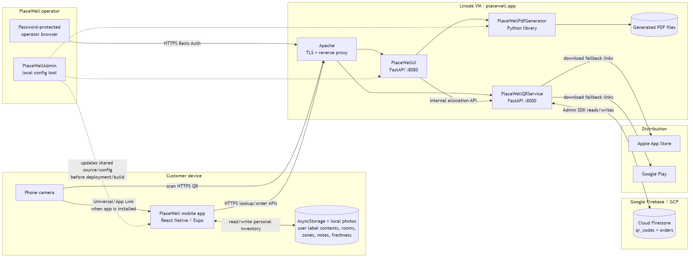
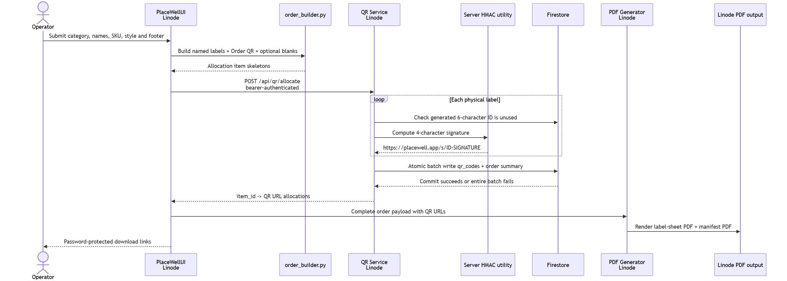
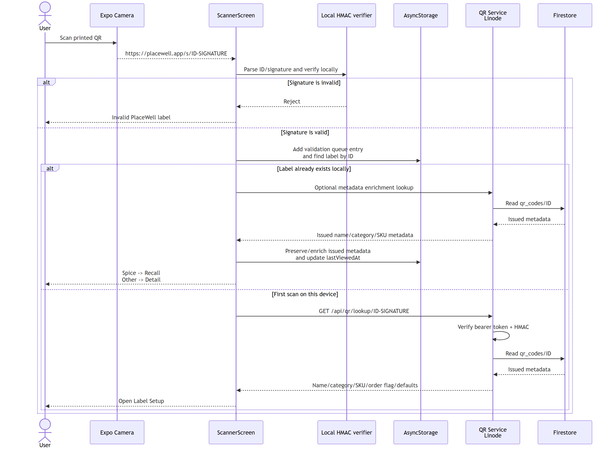
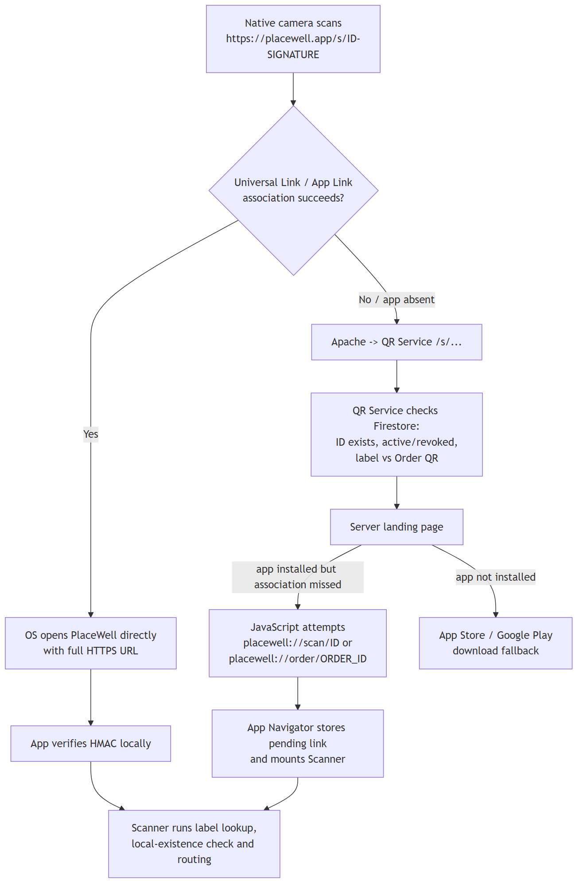
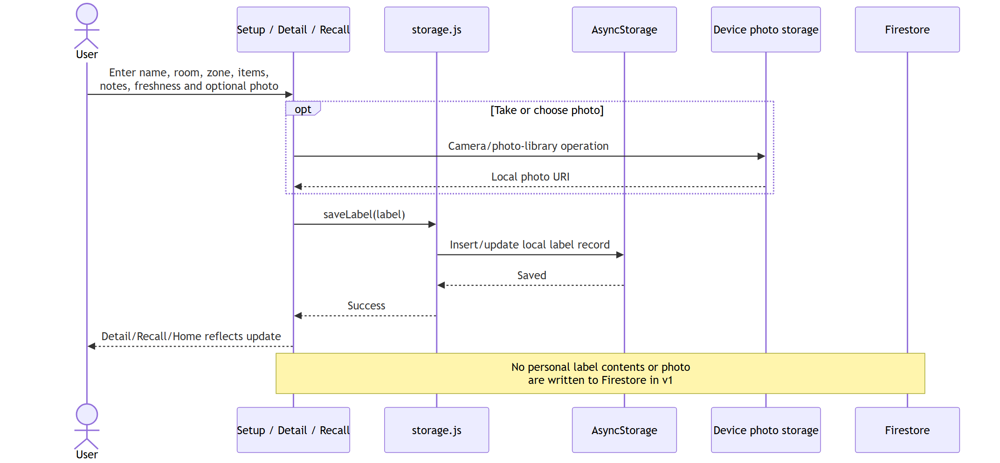
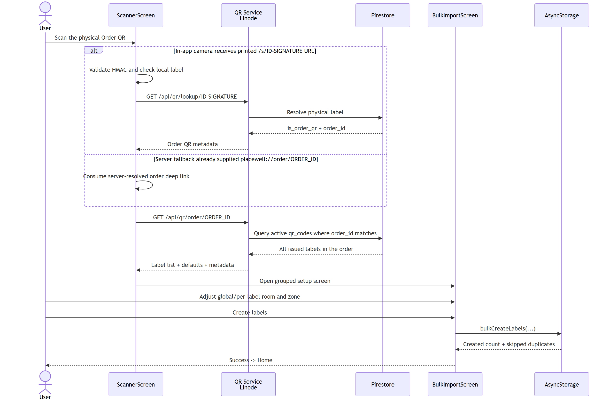
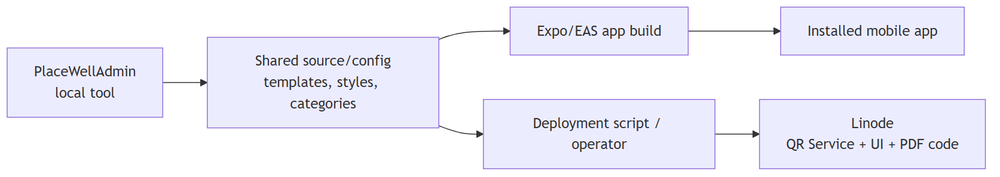
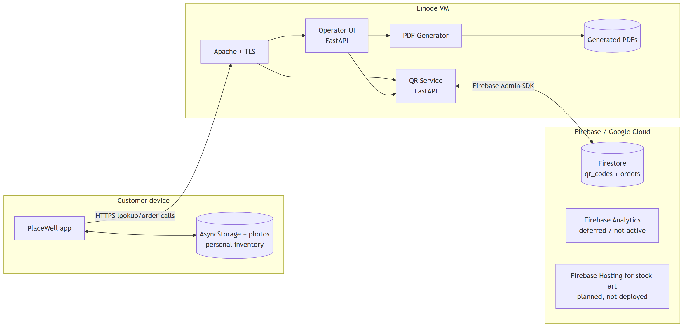
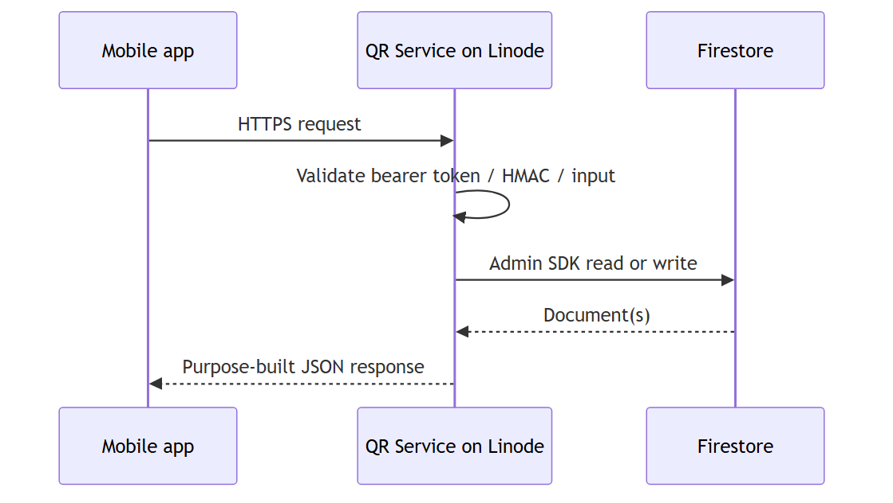
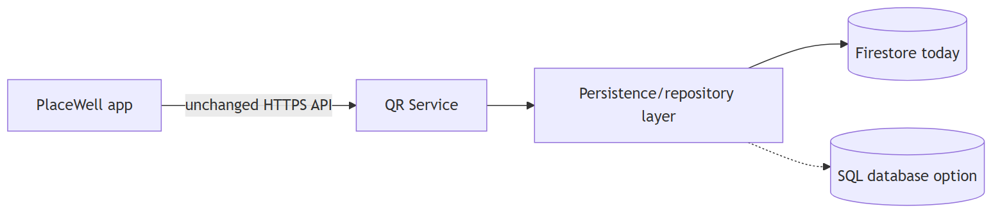

System boundary map
Customer device, Linode services, Firestore, operator tools and app stores.

Physical label order production
Operator submission through allocation, Firestore and PDF generation.

In-app label scan
Local HMAC verification, local-label lookup and online metadata enrichment.

Native-camera scan
Universal/App Link interception, server fallback and store-download behavior.

Label save, recall and edit
Personal inventory and photos remain on the customer's device.

Order QR bulk import
Order-label resolution through Firestore followed by local creation.

Configuration and deployment
How source configuration reaches app builds and deployed Linode services.

Linode versus Firebase hosting boundary
Current runtime ownership, including deferred and planned Firebase services.

Firestore API boundary
The mobile app uses the QR Service API rather than connecting directly to Firestore.

Database abstraction and migration
A future database change stays behind the QR Service persistence layer.
